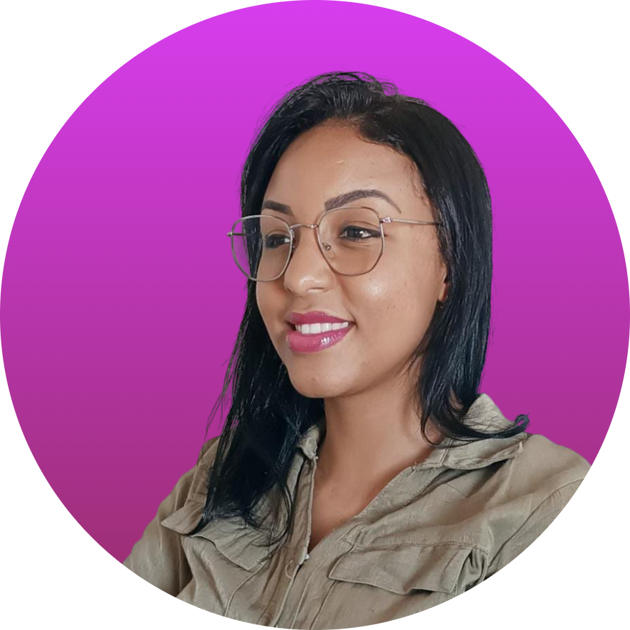
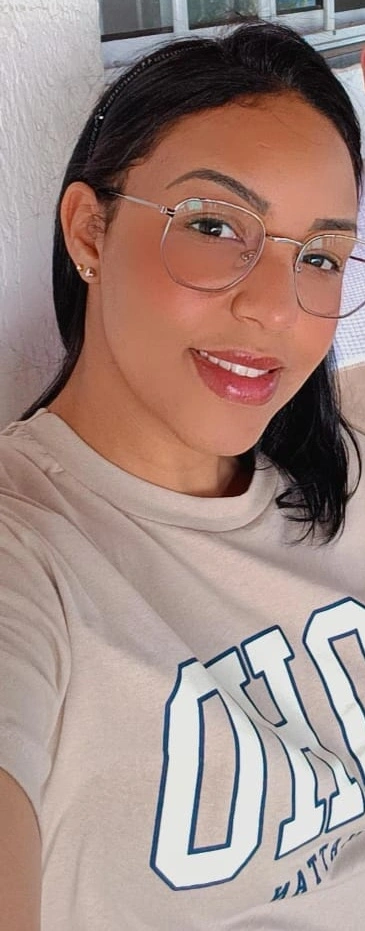

Construindo soluções digitais com propósito.
Desenvolvedora web em formação, apaixonada por tecnologia e por criar experiências digitais simples, funcionais e bonitas. Atualmente estudo HTML, CSS, JavaScript, lógica de programação e Python, sempre buscando evoluir um pouco todos os dias. Gosto de transformar ideias em soluções reais, explorando boas práticas, organização e criatividade em cada projeto. Acredito que tecnologia é sobre propósito — conectar pessoas, facilitar rotinas e entregar resultados que fazem diferença. Estou construindo minha trajetória na área com dedicação, estudo constante e vontade de crescer. Meu objetivo é desenvolver projetos cada vez mais profissionais e, futuramente, atuar como desenvolvedora full stack. Seja bem-vindo(a) ao meu portfólio profissional.

MINHAS ESPECIALIDADES.
Website
Criação de páginas estruturadas e funcionais, utilizando boas práticas e buscando evolução contínua.
Programação (Python e lógica)
Desenvolvimento do raciocínio computacional e primeiros projetos com Python.
Criação de portifólios
Desenvolvimento de páginas modernas e bem estruturadas para apresentar habilidades, trajetória e projetos com destaque e clareza.

Muito Prazer, Sou a Mirian
Sou uma pessoa movida por curiosidade e pela vontade de aprender todos os dias. Encontrei na tecnologia um espaço onde posso unir lógica, criatividade e propósito. Gosto de transformar ideias em algo real, simples e bonito — seja criando interfaces, programando funcionalidades ou explorando novas ferramentas. Acredito que cada projeto é uma oportunidade de evoluir, e cada linha de código me aproxima do meu sonho de atuar como desenvolvedora full stack. Sou dedicada, paciente e apaixonada por evolução contínua. Meu objetivo é crescer na área, colaborar com projetos relevantes e construir uma carreira sólida, com base em estudo, esforço e autenticidade. Este portfólio é parte dessa jornada — e apenas o começo.